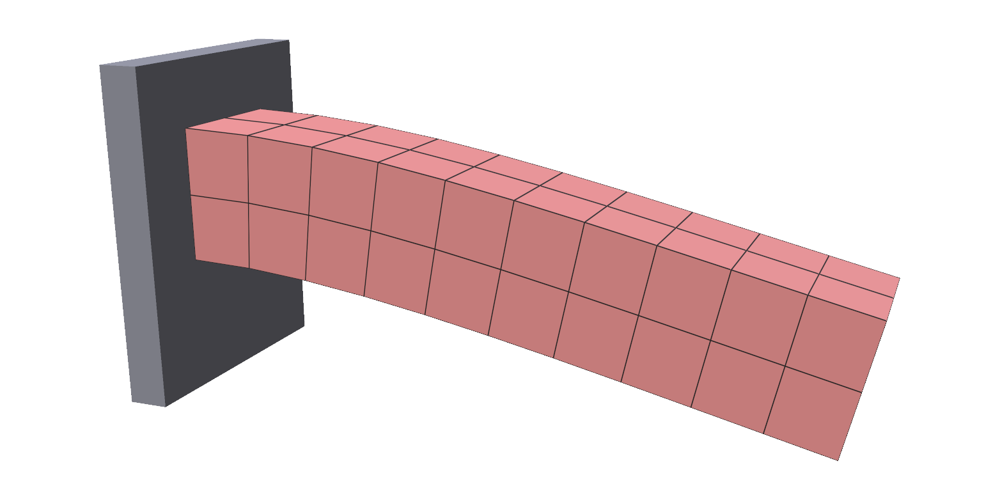
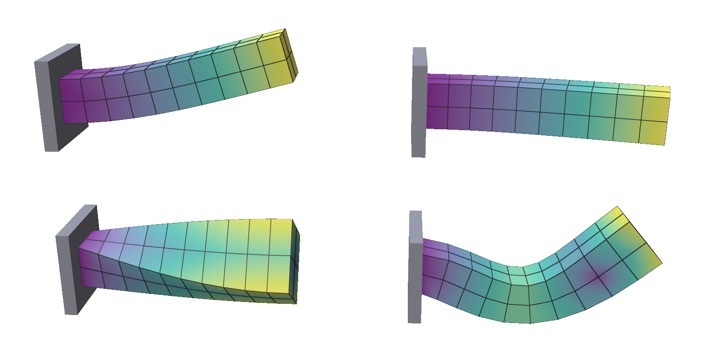
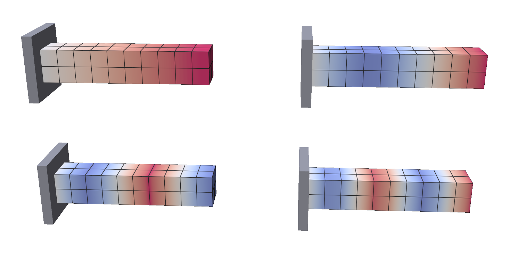
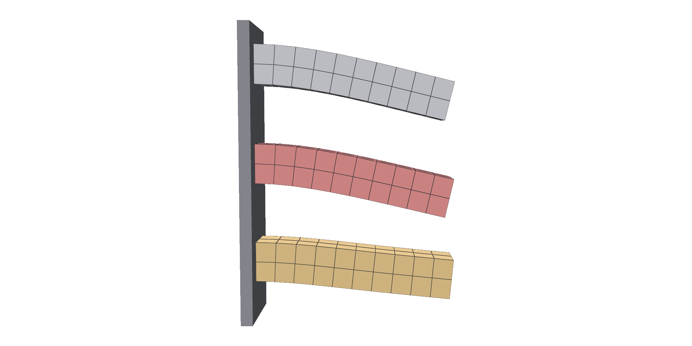
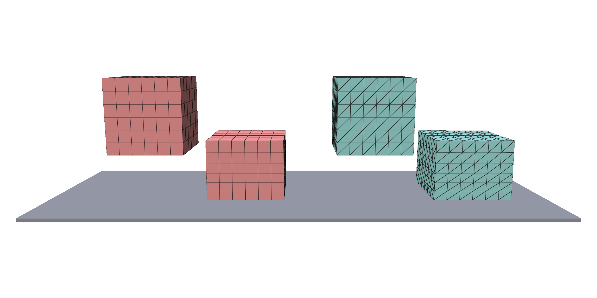
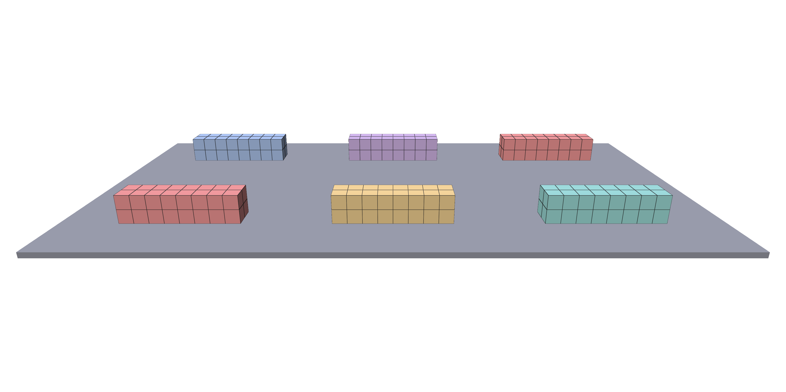
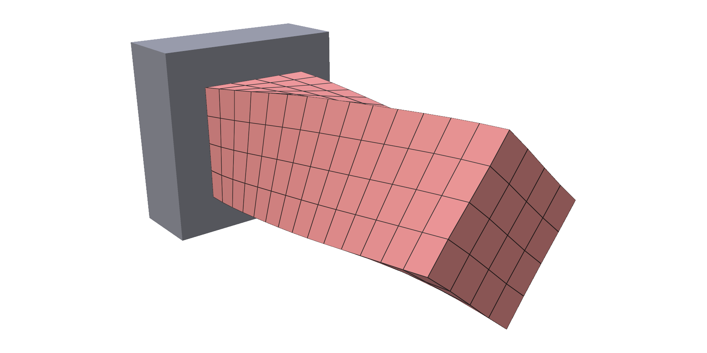
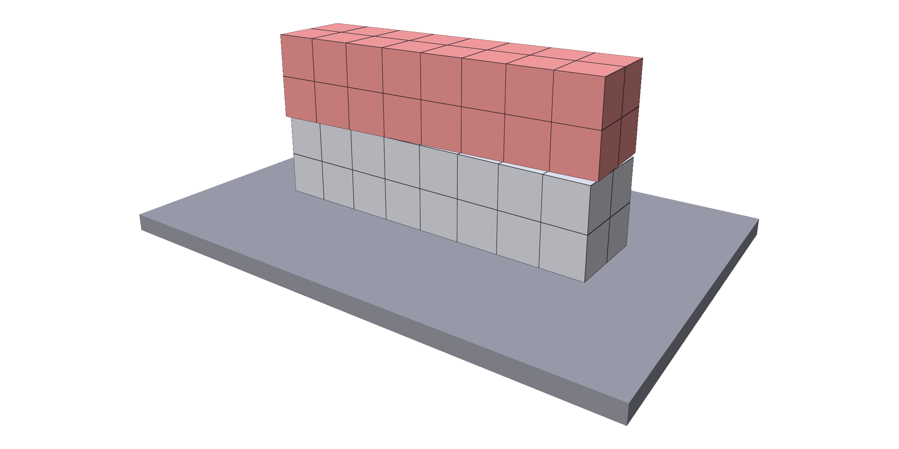
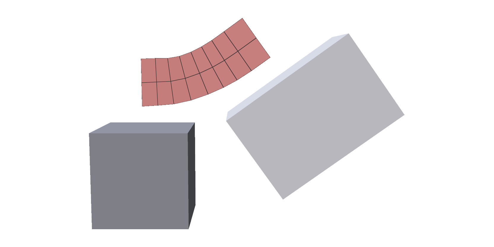

Subspace bodies¶
trusty.subspace simulates a solid on a few precomputed shapes instead of
every node. A full solid solves for three coordinates per node each step. A
reduced body can only move as a combination of the shapes in its basis, so
it solves for one number per shape: tens of coordinates instead of thousands.
It costs a one-time precompute, and the body can't move in ways its basis
doesn't contain.
Quick example¶
A soft beam clamped at one end, sagging under gravity on six handles (72 coordinates):
def precompute_basis(kind="handles", modes=6):
"""Modes of a plain solid with the same mesh, material and clamp."""
mesh, material = make_beam()
rest = np.asarray(mesh.vertices)
pc_world = trusty.World()
pc_beam = trusty.fem.add_hex_solid(pc_world, mesh, material, density=1000.0)
trusty.fem.pin_face(pc_world, pc_beam, axis=0, coord=rest[:, 0].min())
if kind == "handles": # 12 coordinates per handle
return build_basis.build_skinning_eigenmodes(
world=pc_world, rest_positions=rest, num_handles=modes)
else: # one coordinate per mode
return build_basis.build_eigenmodes(world=pc_world, r_modal=modes)
def build_world(basis, backend="auto"):
"""A reduced beam carrying `basis`."""
mesh, material = make_beam()
world = trusty.World(backend=backend)
beam = trusty.subspace.add_hex_body(
world, mesh, material, density=1000.0, basis=basis)
return world, beam

A reduced body takes two steps. First, precompute the basis from a plain
solid with the same mesh, material and clamp. Then add the body
with add_hex_body (or add_tet_body). The result is a body id,
which works with world.step() like any other.
| Argument | Meaning |
|---|---|
rest_mesh |
a HexMesh (add_hex_body) or a TetMesh (add_tet_body) with the nodes, in the same order, the basis was built for |
material |
any solid material |
density |
kg/m³ |
basis |
a trusty.subspace.Basis, from a builder, from your own arrays, or loaded from a file |
surface_proxy |
optional trusty.subspace.SurfaceProxy(V, F), (n, 3) rest vertices and (m, 3) triangles: the body publishes it in place of its mesh boundary, so contact, surface loads and pressure cavities act on it and their face indices index F |
The clamp is part of the basis. The pinned nodes have no shapes to move with, so the runtime body needs no pin of its own. See Pins.
Full script: python examples/subspace/cantilever_beam.py
"""Subspace cantilever: a clamped beam sagging under gravity, on a few modes.
A hex beam is clamped at one end. Its basis is precomputed once from a plain
solid with the same mesh, material and clamp (and, with `--basis-file`, saved
to a `.basis` file and loaded back on later runs), then carried by a reduced
body, whose state is a short vector of mode amplitudes instead of every node
position.
`--basis handles` (the default) uses skinning eigenmodes, which follow large
bending closely. `--basis modal` uses plain vibration modes: cheaper, but
stiffer than the real beam once the sag is large. `--no-viewer` runs headless
and compares the tip sag with the full solid.
Usage:
python examples/subspace/cantilever_beam.py
python examples/subspace/cantilever_beam.py --basis modal --modes 12
python examples/subspace/cantilever_beam.py --basis-file beam.basis
python examples/subspace/cantilever_beam.py --backend accelerate
python examples/subspace/cantilever_beam.py --no-viewer
Install polyscope with ``pip install polyscope``.
"""
from __future__ import annotations
import argparse
import sys
from pathlib import Path
import numpy as np
import trusty
from trusty.subspace.precompute import build_basis
sys.path.insert(0, str(Path(__file__).resolve().parent.parent))
from utils import init_polyscope # noqa: E402
def make_beam():
"""The beam's mesh and material, shared by the precompute and the run."""
mesh = trusty.make_beam_hex_mesh(size=(0.5, 0.1, 0.1), res=(10, 2, 2))
material = trusty.StableNeoHookean(youngs_modulus=1e6, poisson_ratio=0.3)
return mesh, material
def precompute_basis(kind="handles", modes=6):
"""Modes of a plain solid with the same mesh, material and clamp."""
mesh, material = make_beam()
rest = np.asarray(mesh.vertices)
pc_world = trusty.World()
pc_beam = trusty.fem.add_hex_solid(pc_world, mesh, material, density=1000.0)
trusty.fem.pin_face(pc_world, pc_beam, axis=0, coord=rest[:, 0].min())
if kind == "handles": # 12 coordinates per handle
return build_basis.build_skinning_eigenmodes(
world=pc_world, rest_positions=rest, num_handles=modes)
else: # one coordinate per mode
return build_basis.build_eigenmodes(world=pc_world, r_modal=modes)
def build_world(basis, backend="auto"):
"""A reduced beam carrying `basis`."""
mesh, material = make_beam()
world = trusty.World(backend=backend)
beam = trusty.subspace.add_hex_body(
world, mesh, material, density=1000.0, basis=basis)
return world, beam
def load_or_precompute(path: Path, kind: str, modes: int):
if not path.exists(): # precompute once, reuse on later runs
precompute_basis(kind, modes).save(str(path))
basis = trusty.subspace.load(str(path))
return basis
def build_fem_world(backend="auto"):
"""The same beam as a full solid, clamped at the same end."""
mesh, material = make_beam()
world = trusty.World(backend=backend)
beam = trusty.fem.add_hex_solid(world, mesh, material, density=1000.0)
x = np.asarray(mesh.vertices)
trusty.fem.pin_face(world, beam, axis=0, coord=x[:, 0].min())
return world, beam
def tip_sag(rest, x):
"""Mean vertical drop of the free end's nodes."""
tip = rest[:, 0] > rest[:, 0].max() - 1e-9
return float(rest[tip, 2].mean() - x[tip, 2].mean())
def run_headless(world, beam, steps: int, backend: str):
for _ in range(steps):
world.step()
z = trusty.subspace.read_state(world, beam) # (r,) mode amplitudes
x = trusty.subspace.deformed_positions(world, beam) # (N, 3) node positions
rest = np.asarray(make_beam()[0].vertices)
print(f"reduced body: {len(z)} coordinates for {x.size} node coordinates")
print(f"reduced tip sag = {tip_sag(rest, x):.4f} m")
fem_world, fem_beam = build_fem_world(backend)
for _ in range(steps):
fem_world.step()
x_fem = trusty.fem.read_positions(fem_world, fem_beam)
print(f"full tip sag = {tip_sag(rest, x_fem):.4f} m")
def run_polyscope(world, beam, steps: int):
ps = init_polyscope(headless=False)
mesh, _ = make_beam()
ps_mesh = ps.register_volume_mesh(
"beam", np.asarray(mesh.vertices), hexes=np.asarray(mesh.hexes))
ps_mesh.set_edge_width(1.0)
state = {"i": 0, "simulate": False}
def callback():
import polyscope.imgui as psim
_, state["simulate"] = psim.Checkbox("simulate", state["simulate"])
psim.SameLine()
step_now = psim.Button("step")
if (step_now or state["simulate"]) and state["i"] < steps:
world.step()
state["i"] += 1
ps_mesh.update_vertex_positions(
trusty.subspace.deformed_positions(world, beam))
psim.Text(f"step {state['i']} / {steps}")
ps.set_user_callback(callback)
ps.show()
def main():
trusty.check_capabilities("subspace")
p = argparse.ArgumentParser(description=__doc__.split("\n")[0])
p.add_argument("--backend", choices=["auto", "cpu", "cuda", "accelerate"],
default="auto",
help="solver backend (default: auto); 'accelerate' uses "
"Apple's sparse solver")
p.add_argument("--basis", choices=["modal", "handles"], default="handles",
help="basis kind (default: handles)")
p.add_argument("--modes", type=int, default=6,
help="handle count for handles, mode count for modal "
"(default: 6)")
p.add_argument("--basis-file", type=Path, default=None,
help="save the basis here, or load it if the file exists "
"(default: precompute it in memory)")
p.add_argument("--steps", type=int, default=300,
help="simulation steps (default: 300 = 5 s at 1/60)")
p.add_argument("--no-viewer", action="store_true",
help="run headless and print the tip sag")
args = p.parse_args()
if args.backend == "cuda" and "cuda" not in trusty.capabilities():
raise SystemExit("CUDA backend not available in this build")
if args.basis_file:
basis = load_or_precompute(args.basis_file, args.basis, args.modes)
else:
basis = precompute_basis(args.basis, args.modes)
world, beam = build_world(basis, args.backend)
if args.no_viewer:
run_headless(world, beam, args.steps, args.backend)
else:
run_polyscope(world, beam, args.steps)
if __name__ == "__main__":
main()
Bases¶
A basis is built from a world holding exactly one plain solid. Pass that
world (and, for handles, the rest positions) to a builder in
trusty.subspace.precompute.build_basis:
if kind == "handles": # 12 coordinates per handle
return build_basis.build_skinning_eigenmodes(
world=pc_world, rest_positions=rest, num_handles=modes)
else: # one coordinate per mode
return build_basis.build_eigenmodes(world=pc_world, r_modal=modes)
| Builder | Shapes | Coordinates |
|---|---|---|
build_eigenmodes(r_modal=n) |
the n lowest vibration modes |
n |
build_skinning_eigenmodes(num_handles=n) |
n handles, each moving the body by a smooth weight times an affine map |
12 n |
build_eigenmodes_with_handles(r_modal=m, num_handles=n) |
both of the above | m + 12 n |
build_activated_skinning_eigenmodes(num_handles=n) |
handles, plus the shape a muscle contracts into; see Muscles | 12 n + 1 |
The builders need SciPy.
Modal bases are the cheapest. Here are the first four modes of the clamped beam, coloured by how far each moves the nodes: bending one way, bending the other way, twisting, and the second bending mode.

Handle bases cost 12 coordinates per handle, but a handle can rotate as well as bend, so they follow large deflection. These are four of the beam's handle weights (blue to red is -1 to 1):

The choice matters once the deflection is large. The same beam, settled under gravity: from the top, the full solid, six handles, and six modes. The handles sag almost as far as the full solid (0.088 m against 0.092 m). The modes sag only half as far, because vibration modes are linear and stiffen under large rotation. Use modal bases for small deformation.

Run python examples/subspace/cantilever_beam.py --no-viewer --basis modal to
compare the tip sag with the full solid yourself.
Your own arrays¶
A basis can also come straight from arrays you computed elsewhere:
| Constructor | Takes | Coordinates |
|---|---|---|
Basis.modal(modes) |
(3N, r) displacement shapes, rows x, y, z per node |
r |
Basis.skinning_eigenmodes(weights) |
(N, m) scalar weights, one handle per column |
12 m |
Basis.modal_and_skinning_eigenmodes(modes, weights) |
both | r + 12 m |
A handle moves the body by its weight times an affine map of the rest position, so each body applies its weights at its own rest positions. Here a beam is clamped by weights that are zero at one end:
W = smooth_weights(V, T, num_weights, clamped=V[:, 0] < 1e-9) # (N, m)
basis = trusty.subspace.Basis.skinning_eigenmodes(W)
world = trusty.World(backend=backend)
beam = trusty.subspace.add_tet_body(world, mesh, material, density=1000.0,
basis=basis)
Adding a body checks that the basis has one row per node of the mesh and that
its shapes are independent; dependent shapes would leave the body without a
well-defined mass. basis.modes, basis.skinning_weights, basis.kind and
basis.reduced_size read the arrays back, and basis.matrix(rest) gives the
(3N, r) matrix of shapes a body at rest positions rest moves in.
Full script: python examples/subspace/external_skinning_weights.py
"""A reduced body built from skinning weights you computed yourself.
You have a tet mesh and an (N, m) array of scalar skinning weights, one field
per column, from any tool. `trusty.subspace.Basis.skinning_eigenmodes` turns
each column into a handle that moves the body by its weight times an affine
map, so the body has 12 m coordinates. Here the weights are the smoothest
fields on the mesh that are zero at one end of a beam, so that end cannot
move: the beam is clamped by its weights alone and sags under gravity.
`--no-viewer` prints the coordinate count and the tip sag next to the same
beam simulated as a full solid.
Usage:
python examples/subspace/external_skinning_weights.py
python examples/subspace/external_skinning_weights.py --no-viewer
Install polyscope with `pip install polyscope`.
"""
from __future__ import annotations
import argparse
import sys
from pathlib import Path
import numpy as np
import scipy.sparse as sp
import scipy.sparse.linalg as spla
import trusty
sys.path.insert(0, str(Path(__file__).resolve().parent.parent))
from utils import init_polyscope # noqa: E402
def make_beam():
"""The beam's tet mesh and material, shared by the reduced and full runs."""
mesh = trusty.make_beam_tet_mesh(size=(0.5, 0.1, 0.1), res=(10, 2, 2))
material = trusty.StableNeoHookean(youngs_modulus=1e6, poisson_ratio=0.3)
return mesh, material
def smooth_weights(V, T, m, clamped):
"""`m` smooth scalar fields on the mesh, zero on the `clamped` nodes: the
lowest eigenvectors of the mesh's graph Laplacian. Any (N, m) array works
in their place."""
N = len(V)
edges = np.concatenate([T[:, [a, b]] for a in range(4) for b in range(a + 1, 4)])
A = sp.coo_matrix((np.ones(len(edges)), (edges[:, 0], edges[:, 1])), shape=(N, N))
A = ((A + A.T) > 0).astype(float)
L = sp.diags(np.asarray(A.sum(axis=1)).ravel()) - A
free = np.flatnonzero(~clamped)
_, w = spla.eigsh(L[free][:, free].tocsc(), k=m, sigma=0.0)
W = np.zeros((N, m))
W[free] = w
return W
def build_world(num_weights: int, backend: str = "auto"):
"""The reduced beam, clamped at x = 0 through its weights."""
mesh, material = make_beam()
V, T = np.asarray(mesh.vertices), np.asarray(mesh.tets)
W = smooth_weights(V, T, num_weights, clamped=V[:, 0] < 1e-9) # (N, m)
basis = trusty.subspace.Basis.skinning_eigenmodes(W)
world = trusty.World(backend=backend)
beam = trusty.subspace.add_tet_body(world, mesh, material, density=1000.0,
basis=basis)
return world, beam
def build_fem_world(backend: str = "auto"):
"""The same beam as a full solid, clamped at x = 0."""
mesh, material = make_beam()
world = trusty.World(backend=backend)
beam = trusty.fem.add_tet_solid(world, mesh, material, density=1000.0)
trusty.fem.pin_face(world, beam, axis=0, coord=0.0)
return world, beam
def tip_sag(rest, x):
"""Mean vertical drop of the free end's nodes."""
tip = rest[:, 0] > rest[:, 0].max() - 1e-9
return float(rest[tip, 2].mean() - x[tip, 2].mean())
def run_headless(world, beam, steps: int, backend: str):
for _ in range(steps):
world.step()
rest = np.asarray(make_beam()[0].vertices)
z = trusty.subspace.read_state(world, beam)
x = trusty.subspace.deformed_positions(world, beam)
print(f"reduced body: {len(z)} coordinates for {x.size} node coordinates")
print(f"reduced tip sag = {tip_sag(rest, x):.4f} m")
fem_world, fem_beam = build_fem_world(backend)
for _ in range(steps):
fem_world.step()
print(f"full tip sag = "
f"{tip_sag(rest, trusty.fem.read_positions(fem_world, fem_beam)):.4f} m")
def run_polyscope(world, beam, steps: int):
ps = init_polyscope(headless=False)
mesh, _ = make_beam()
ps_mesh = ps.register_volume_mesh(
"beam", np.asarray(mesh.vertices), tets=np.asarray(mesh.tets))
ps_mesh.set_edge_width(1.0)
state = {"i": 0, "simulate": False}
def callback():
import polyscope.imgui as psim
_, state["simulate"] = psim.Checkbox("simulate", state["simulate"])
psim.SameLine()
step_now = psim.Button("step")
if (step_now or state["simulate"]) and state["i"] < steps:
world.step()
state["i"] += 1
ps_mesh.update_vertex_positions(
trusty.subspace.deformed_positions(world, beam))
psim.Text(f"step {state['i']} / {steps}")
ps.set_user_callback(callback)
ps.show()
def main():
trusty.check_capabilities("subspace")
p = argparse.ArgumentParser(description=__doc__.split("\n")[0])
p.add_argument("--backend", choices=["auto", "cpu", "cuda", "accelerate"],
default="auto", help="solver backend (default: auto)")
p.add_argument("--weights", type=int, default=6,
help="number of weight fields; the body has 12 coordinates "
"per field (default: 6)")
p.add_argument("--steps", type=int, default=100,
help="simulation steps (default: 100)")
p.add_argument("--no-viewer", action="store_true",
help="run headless and print the tip sag")
args = p.parse_args()
if args.backend == "cuda" and "cuda" not in trusty.capabilities():
raise SystemExit("CUDA backend not available in this build")
world, beam = build_world(args.weights, args.backend)
if args.no_viewer:
run_headless(world, beam, args.steps, args.backend)
else:
run_polyscope(world, beam, args.steps)
if __name__ == "__main__":
main()
Pins¶
To clamp a reduced body, pin the precompute solid, as in the
quick example. A pin set with trusty.fem.pin_face on the
reduced body itself has no effect: a basis built from an unpinned solid lets
the body fall.
On a free body, the lowest shapes are rigid motion: a modal basis spends its first six modes on translation and rotation, so give it more than six.
Saving and loading¶
A precompute only needs to run once per mesh. basis.save writes the basis to
a file, and trusty.subspace.load reads it back:
if not path.exists(): # precompute once, reuse on later runs
precompute_basis(kind, modes).save(str(path))
basis = trusty.subspace.load(str(path))
Run python examples/subspace/cantilever_beam.py --basis-file beam.basis
twice: the first run builds and saves the basis, the second loads it.
The file is a NumPy .npz archive holding modes (3N by r) and
skinning_weights (N by m).
Hex and tet bodies¶
Tet meshes work the same way. Build the basis from add_tet_solid, and add
the body with add_tet_body:
if element == "hex":
base_mesh = trusty.make_beam_hex_mesh(size=(0.5, 0.5, 0.5), res=(6, 6, 6))
fem_add = trusty.fem.add_hex_solid
subspace_add = trusty.subspace.add_hex_body
cells = np.asarray(base_mesh.hexes)
wrap_mesh = trusty.make_hex_mesh
elif element == "tet":
base_mesh = trusty.make_beam_tet_mesh(size=(0.5, 0.5, 0.5), res=(6, 6, 6))
fem_add = trusty.fem.add_tet_solid
subspace_add = trusty.subspace.add_tet_body
cells = np.asarray(base_mesh.tets)
wrap_mesh = trusty.make_tet_mesh
else:
raise ValueError(f"unknown element kind {element!r}")
A soft block, dropped onto a floor as hexes (left) and as tets (right). Each is shown before the drop and at the moment it is most squashed. The block is free, so its basis spans the fall and the bounce as well as the squash:

Full script: python examples/subspace/beam_drop.py
"""A soft reduced block dropped onto a floor, as hex or tet elements.
The block is free (not clamped), so its basis also spans rigid motion: it
falls, lands on the floor plane and bounces. The state is a short vector of
basis coordinates instead of every node position.
Pick the basis kind with ``--basis``:
- ``handles`` (default): skinning eigenmodes, 12 coordinates per
handle. They follow large rotation, so the block can tumble.
- ``modal``: plain vibration modes, one coordinate per mode. Cheaper,
good for small deformation. On a free body the first six modes are
rigid motion, so use more than six.
Pick the element kind with ``--element hex|tet``: hex bodies use
``trusty.subspace.add_hex_body``, tet bodies ``add_tet_body``.
Usage:
python examples/subspace/beam_drop.py
python examples/subspace/beam_drop.py --element tet
python examples/subspace/beam_drop.py --backend cuda --modes 8
python examples/subspace/beam_drop.py --no-viewer --steps 240
Install polyscope with ``pip install polyscope``.
"""
from __future__ import annotations
import argparse
import sys
from pathlib import Path
import numpy as np
import trusty
from trusty.subspace.precompute import build_basis
sys.path.insert(0, str(Path(__file__).resolve().parent.parent))
from utils import init_polyscope # noqa: E402
def _register_basis_columns(ps_mesh, basis, rest_verts):
"""Register every basis column on the mesh as scalar (magnitude) and
vector (per-vertex 3D) quantities. Polyscope's UI lets the user pick
which one to display from the structure panel."""
B = basis.matrix(rest_verts)
for k in range(B.shape[1]):
col = B[:, k].reshape(basis.num_nodes, 3)
mag = np.linalg.norm(col, axis=1)
ps_mesh.add_scalar_quantity(f"basis[{k}] |.|", mag)
ps_mesh.add_vector_quantity(f"basis[{k}] vec", col)
DROP_HEIGHT = 0.3
FLOOR_Z = 0.0
def build_world_and_basis(basis_kind: str, element: str, modes: int,
backend: str):
"""A free block lifted ``DROP_HEIGHT`` above the floor, with its basis.
``modes`` is the mode count for ``modal`` and the handle count for
``handles``.
"""
if element == "hex":
base_mesh = trusty.make_beam_hex_mesh(size=(0.5, 0.5, 0.5), res=(6, 6, 6))
fem_add = trusty.fem.add_hex_solid
subspace_add = trusty.subspace.add_hex_body
cells = np.asarray(base_mesh.hexes)
wrap_mesh = trusty.make_hex_mesh
elif element == "tet":
base_mesh = trusty.make_beam_tet_mesh(size=(0.5, 0.5, 0.5), res=(6, 6, 6))
fem_add = trusty.fem.add_tet_solid
subspace_add = trusty.subspace.add_tet_body
cells = np.asarray(base_mesh.tets)
wrap_mesh = trusty.make_tet_mesh
else:
raise ValueError(f"unknown element kind {element!r}")
material = trusty.StableNeoHookean(youngs_modulus=1e5, poisson_ratio=0.3)
# Lift the block. The precompute and the run share this mesh, so the
# basis rest shape matches the body's.
rest_verts = np.asarray(base_mesh.vertices, dtype=np.float64).copy()
rest_verts[:, 2] += DROP_HEIGHT
mesh = wrap_mesh(np.ascontiguousarray(rest_verts),
np.ascontiguousarray(cells))
# Precompute world: a plain solid with the same mesh and material.
pc_world = trusty.World()
fem_add(pc_world, mesh, material, density=1000.0)
if basis_kind == "modal":
basis = build_basis.build_eigenmodes(world=pc_world, r_modal=modes)
elif basis_kind == "handles":
basis = build_basis.build_skinning_eigenmodes(
world=pc_world, rest_positions=rest_verts, num_handles=modes)
else:
raise ValueError(f"unknown basis kind {basis_kind!r}")
# Runtime world: the reduced body, carrying the basis.
world = trusty.World(timestep=1.0 / 60.0,
backend=backend,
newton=trusty.NewtonConfig(tolerance=1e-5),
time_stepping="bdf2")
trusty.contact.enable(world)
beam = subspace_add(world, mesh, material, density=1000.0, basis=basis)
trusty.add_floor_plane(world, FLOOR_Z)
return world, beam, mesh, rest_verts, cells, basis
def _register_visuals(ps, rest_verts, cells, element):
kw = {"hexes": cells} if element == "hex" else {"tets": cells}
ps_mesh = ps.register_volume_mesh("beam", rest_verts, **kw)
ps_mesh.set_edge_width(1.0)
pad = 0.3
x_lo, x_hi = float(rest_verts[:, 0].min()) - pad, float(rest_verts[:, 0].max()) + pad
y_lo, y_hi = float(rest_verts[:, 1].min()) - pad, float(rest_verts[:, 1].max()) + pad
floor_verts = np.array([
[x_lo, y_lo, FLOOR_Z], [x_hi, y_lo, FLOOR_Z],
[x_hi, y_hi, FLOOR_Z], [x_lo, y_hi, FLOOR_Z]])
floor_faces = np.array([[0, 1, 2], [0, 2, 3]])
ps.register_surface_mesh("floor", floor_verts, floor_faces)
return ps_mesh
def run_polyscope(rest_verts, cells, element, body, world, basis,
steps: int, label: str):
ps = init_polyscope(headless=False)
ps_mesh = _register_visuals(ps, rest_verts, cells, element)
_register_basis_columns(ps_mesh, basis, rest_verts)
state = {"i": 0, "simulate": False}
def callback():
import polyscope.imgui as psim
_, state["simulate"] = psim.Checkbox("simulate", state["simulate"])
psim.SameLine()
step_now = psim.Button("step")
if (step_now or state["simulate"]) and state["i"] < steps:
world.step()
state["i"] += 1
ps_mesh.update_vertex_positions(
np.asarray(trusty.subspace.deformed_positions(world, body=body)))
psim.Text(f"step {state['i']} / {steps} backend={label}")
rep = world.last_report()
psim.Text(
f"last solve: iters={rep.iterations} "
f"residual={rep.final_residual:.3e}")
ps.set_user_callback(callback)
ps.show()
def run_headless(body, world, steps: int, label: str):
lowest = np.inf
for _ in range(steps):
world.step()
x = trusty.subspace.deformed_positions(world, body)
lowest = min(lowest, float(x[:, 2].min()))
print(f"[{label}] {steps} steps; lowest point {lowest:.4f} m "
f"(floor at {FLOOR_Z}); final rest height {x[:, 2].min():.4f} m")
def main():
trusty.check_capabilities("subspace", "contact")
p = argparse.ArgumentParser(description=__doc__.split("\n")[0])
p.add_argument("--backend", choices=["auto", "cpu", "cuda", "accelerate"],
default="auto",
help="simulator backend (default: auto). 'accelerate' uses "
"Apple's sparse solver.")
p.add_argument("--basis", choices=["modal", "handles"],
default="handles",
help="basis kind (default: handles)")
p.add_argument("--element", choices=["hex", "tet"], default="hex",
help="element kind (default: hex)")
p.add_argument("--modes", type=int, default=6,
help="basis size: modal column count for --basis modal, "
"handle count for --basis handles (default: 6)")
p.add_argument("--steps", type=int, default=240,
help="total simulation steps (default: 240 = 4 s at 1/60)")
p.add_argument("--no-viewer", action="store_true",
help="run headless and print where the block lands")
args = p.parse_args()
if args.backend == "cuda" and "cuda" not in trusty.capabilities():
raise SystemExit(
"This build does not include CUDA support; "
"run with --backend cpu.")
world, beam, mesh, rest_verts, cells, basis = build_world_and_basis(
args.basis, args.element, args.modes, args.backend)
label = f"{args.backend}-{args.element}-{args.basis}"
if args.no_viewer:
run_headless(beam, world, args.steps, label)
else:
run_polyscope(rest_verts, cells, args.element, beam, world, basis,
args.steps, label)
if __name__ == "__main__":
main()
Reading results¶
z = trusty.subspace.read_state(world, beam) # (r,) mode amplitudes
x = trusty.subspace.deformed_positions(world, beam) # (N, 3) node positions
The positions are X + B z, with X the rest positions and B the basis
matrix, basis.matrix(X). They are also
available through trusty.fem.read_positions, and trusty.fem readouts such
as read_von_mises and read_surface_triangles work on reduced bodies too.
| Function | Returns |
|---|---|
read_state(world, body) |
the reduced state z, (r,); zeros before the first step |
deformed_positions(world, body) |
current node positions, (N, 3) |
num_bodies(world) |
how many reduced bodies the world holds |
Many bodies, one basis¶
Copies of one mesh can share one basis. Build it once and pass it to every body. Each body is placed by its own mesh and keeps its own state:
# Build the basis once; every beam carries the same one. Each body's rest
# shape is its own mesh, so the beams still sit at distinct places.
basis = build_shared_basis(modes)
bodies = []
for i in range(num_beams):
body, mesh = add_translated_beam(
world, basis,
x_offset=(i % 3 - 1) * spacing,
y_offset=(i // 3) * spacing)
bodies.append(body)
Here are six beams, just landed:

Bodies that don't touch are solved separately, so the cost grows gently with
the body count. On macOS, the accelerate backend is the fastest option for
many bodies, and the default auto picks it there.
Full script: python examples/subspace/many_beams.py
"""Many soft beams falling onto a floor, all sharing one basis.
The beams are translated copies of one rest mesh, so one precomputed basis
serves them all: it is built once and handed to every body, and each body
keeps its own reduced state. Independent bodies are solved separately rather
than as one dense system, so the cost grows gently with the body count.
`--backend accelerate` uses Apple's Accelerate sparse solver, which is
the fastest option on macOS for many bodies.
Usage:
python examples/subspace/many_beams.py
python examples/subspace/many_beams.py --num-beams 12 \
--backend accelerate --no-viewer --steps 240
"""
from __future__ import annotations
import argparse
import sys
import time
from pathlib import Path
import numpy as np
import trusty
from trusty.subspace.precompute import build_basis
sys.path.insert(0, str(Path(__file__).resolve().parent.parent))
from utils import init_polyscope # noqa: E402
BEAM_SIZE = (0.4, 0.1, 0.1)
BEAM_RES = (8, 2, 2)
DROP_HEIGHT = 0.3
FLOOR_Z = 0.0
def build_shared_basis(num_handles: int):
"""Build one skinning-eigenmode basis from a single beam at rest; every
beam in the world uses it."""
mesh = trusty.make_beam_hex_mesh(size=BEAM_SIZE, res=BEAM_RES)
material = trusty.StableNeoHookean(youngs_modulus=5e5, poisson_ratio=0.3)
world = trusty.World()
_ = trusty.fem.add_hex_solid(world, mesh, material, density=1000.0)
return build_basis.build_skinning_eigenmodes(
world=world,
rest_positions=np.asarray(mesh.vertices, dtype=np.float64),
num_handles=num_handles)
def add_translated_beam(world, basis, x_offset: float, y_offset: float):
"""Add one hex subspace beam shifted by (x_offset, y_offset, DROP_HEIGHT),
sharing `basis` with the other beams. Returns (body, mesh)."""
src = trusty.make_beam_hex_mesh(size=BEAM_SIZE, res=BEAM_RES)
verts = np.asarray(src.vertices, dtype=np.float64).copy()
verts[:, 0] += x_offset
verts[:, 1] += y_offset
verts[:, 2] += DROP_HEIGHT
mesh = trusty.make_hex_mesh(verts, np.asarray(src.hexes, dtype=np.int32))
material = trusty.StableNeoHookean(youngs_modulus=5e5, poisson_ratio=0.3)
body = trusty.subspace.add_hex_body(
world, mesh, material, density=1000.0, basis=basis)
return body, mesh
def build_world(num_beams: int, modes: int, spacing: float, backend: str):
"""`num_beams` beams in rows of three above a floor, all sharing one
basis. Returns (world, bodies, hexes)."""
world = trusty.World(timestep=1.0 / 60.0, backend=backend)
trusty.contact.enable(world)
# Build the basis once; every beam carries the same one. Each body's rest
# shape is its own mesh, so the beams still sit at distinct places.
basis = build_shared_basis(modes)
bodies = []
for i in range(num_beams):
body, mesh = add_translated_beam(
world, basis,
x_offset=(i % 3 - 1) * spacing,
y_offset=(i // 3) * spacing)
bodies.append(body)
trusty.add_floor_plane(world, FLOOR_Z)
return world, bodies, np.asarray(mesh.hexes)
def run_headless(world, bodies, steps: int, label: str):
t0 = time.time()
for _ in range(steps):
world.step()
dt = time.time() - t0
lowest = min(float(trusty.subspace.deformed_positions(world, b)[:, 2].min())
for b in bodies)
print(f"[{label}] {steps} steps in {dt:.2f} s "
f"({1000 * dt / max(steps, 1):.2f} ms/step); lowest point "
f"{lowest:.4f} m (floor at {FLOOR_Z})")
def run_polyscope(world, bodies, hexes, steps: int, label: str):
ps = init_polyscope(headless=False)
ps_meshes = []
for k, b in enumerate(bodies):
m = ps.register_volume_mesh(
f"beam_{k}", trusty.subspace.deformed_positions(world, b),
hexes=hexes)
m.set_edge_width(0.6)
ps_meshes.append(m)
state = {"i": 0, "simulate": False}
def callback():
import polyscope.imgui as psim
_, state["simulate"] = psim.Checkbox("simulate", state["simulate"])
psim.SameLine()
step_now = psim.Button("step")
if (step_now or state["simulate"]) and state["i"] < steps:
world.step()
state["i"] += 1
for b, m in zip(bodies, ps_meshes):
m.update_vertex_positions(
trusty.subspace.deformed_positions(world, b))
psim.Text(f"step {state['i']} / {steps} {label}")
ps.set_user_callback(callback)
ps.show()
def main():
trusty.check_capabilities("subspace", "contact")
p = argparse.ArgumentParser(description=__doc__.split("\n")[0])
p.add_argument("--backend", choices=["auto", "cpu", "cuda", "accelerate"],
default="auto",
help="solver backend (default: auto). 'accelerate' (Apple's "
"sparse solver) is far faster on many-body worlds.")
p.add_argument("--num-beams", type=int, default=6,
help="how many beams to instance (default: 6)")
p.add_argument("--modes", type=int, default=6,
help="skinning-handle count per basis (default: 6)")
p.add_argument("--steps", type=int, default=180)
p.add_argument("--spacing", type=float, default=0.7,
help="grid spacing between beam centres (default: 0.7)")
p.add_argument("--no-viewer", action="store_true",
help="run headless and print the timing")
args = p.parse_args()
if args.backend == "cuda" and "cuda" not in trusty.capabilities():
raise SystemExit("CUDA backend not available in this build")
label = f"{args.num_beams} beams @ {args.modes} handles ({args.backend})"
world, bodies, hexes = build_world(
args.num_beams, args.modes, args.spacing, args.backend)
if args.no_viewer:
run_headless(world, bodies, args.steps, label)
else:
run_polyscope(world, bodies, hexes, args.steps, label)
if __name__ == "__main__":
main()
Muscles¶
A muscle is a field of fiber directions on a reduced body. When you raise its actuation, the body contracts along the fibers.
muscle = trusty.subspace.add_muscle(
world, beam,
directions=np.asarray(direction, dtype=float).reshape(1, 3),
stiffness=stiffness)
| Argument | Meaning |
|---|---|
body |
the reduced body |
directions |
fiber directions: (1, 3) for one direction everywhere, or one row per element, (E, 3) |
stiffness |
the muscle's strength, Pa; the pull is stiffness times the actuation |
add_muscle returns the muscle's id. The actuation starts at 0. Set it before
a step, and it takes effect on that step:
for i in range(1, steps + 1):
trusty.subspace.set_actuation(world, muscle, actuation_at(i, period, amp))
world.step()
pos = trusty.subspace.deformed_positions(world, beam)
One pulse of the actuation, from 0 up to 1 and back, with the fibers along the beam's length; the grey beam above is at rest. At full actuation the beam is 29% shorter:
| Function | Does |
|---|---|
add_muscle(world, body, directions, stiffness) |
adds a muscle, returns its id |
set_actuation(world, muscle, value) |
sets the actuation, from the next step |
actuation(world, muscle) |
the current actuation |
num_muscles(world, body) |
how many muscles the body has |
Full script: python examples/subspace/muscle.py
"""Directional muscle actuation on a subspace body.
A free hex beam carries one muscle whose fibers all point one way. Raising
its actuation contracts the body along the fibers; the strength of the pull is
the muscle's stiffness times its actuation.
Pick the fiber direction with ``--direction`` to see the beam shorten along
x / y / z; the actuation pulses smoothly from 0 to ``--amp`` and back.
Usage:
python examples/subspace/muscle.py --direction x
python examples/subspace/muscle.py --no-viewer --direction y
Install polyscope with ``pip install polyscope``.
"""
from __future__ import annotations
import argparse
import math
import sys
from pathlib import Path
import numpy as np
import trusty
from trusty.subspace.precompute import build_basis
DIRECTIONS = {
"x": (1.0, 0.0, 0.0),
"y": (0.0, 1.0, 0.0),
"z": (0.0, 0.0, 1.0),
}
def build_world(modes: int, direction, stiffness: float, backend: str = "auto"):
"""Free hex beam + one directional muscle fiber."""
mesh = trusty.make_beam_hex_mesh(size=(2.0, 0.5, 0.5), res=(10, 3, 3))
material = trusty.StableNeoHookean(youngs_modulus=1e6, poisson_ratio=0.3)
rest_verts = np.asarray(mesh.vertices).copy()
# Precompute world: a plain solid (free, no pin) with the same mesh and
# material.
pc_world = trusty.World()
trusty.fem.add_hex_solid(pc_world, mesh, material, density=1000.0)
basis = build_basis.build_skinning_eigenmodes(
world=pc_world, rest_positions=rest_verts, num_handles=modes)
world = trusty.World(backend=backend,
timestep=1.0 / 60.0,
gravity=(0.0, 0.0, 0.0)) # isolate the muscle from gravity
beam = trusty.subspace.add_hex_body(
world, mesh, material, density=1000.0, basis=basis)
muscle = trusty.subspace.add_muscle(
world, beam,
directions=np.asarray(direction, dtype=float).reshape(1, 3),
stiffness=stiffness)
return world, beam, muscle, mesh, rest_verts
def actuation_at(step: int, period: int, amp: float) -> float:
"""Smooth 0 -> amp -> 0 pulse."""
return amp * 0.5 * (1.0 - math.cos(2.0 * math.pi * step / period))
def extent_along(positions: np.ndarray, axis) -> float:
proj = positions @ np.asarray(axis, dtype=float)
return float(proj.max() - proj.min())
def run_headless(world, beam, muscle, rest_verts, axis, steps, period, amp):
rest_extent = extent_along(rest_verts, axis)
min_extent = rest_extent
for i in range(1, steps + 1):
trusty.subspace.set_actuation(world, muscle, actuation_at(i, period, amp))
world.step()
pos = trusty.subspace.deformed_positions(world, beam)
min_extent = min(min_extent, extent_along(pos, axis))
shrink = (rest_extent - min_extent) / rest_extent
print(f"rest extent along fiber = {rest_extent:.4f}")
print(f"min extent along fiber = {min_extent:.4f} ({shrink * 100:.1f}% contraction)")
def run_polyscope(world, beam, muscle, mesh, axis, steps, period, amp):
sys.path.insert(0, str(Path(__file__).resolve().parent.parent))
from utils import init_polyscope
ps = init_polyscope(headless=False)
rest = np.asarray(mesh.vertices).copy()
hexes = np.asarray(mesh.hexes)
ps_mesh = ps.register_volume_mesh("muscle_beam", rest, hexes=hexes)
ps_mesh.set_edge_width(1.0)
state = {"i": 0, "simulate": True}
def callback():
import polyscope.imgui as psim
_, state["simulate"] = psim.Checkbox("simulate", state["simulate"])
if state["simulate"] and state["i"] < steps:
state["i"] += 1
a = actuation_at(state["i"], period, amp)
trusty.subspace.set_actuation(world, muscle, a)
world.step()
ps_mesh.update_vertex_positions(
np.asarray(trusty.subspace.deformed_positions(world, body=beam)))
psim.Text(f"step {state['i']} / {steps} actuation = {a:.2f}")
ps.set_user_callback(callback)
ps.show()
def main():
trusty.check_capabilities("subspace")
p = argparse.ArgumentParser(description=__doc__.split("\n")[0])
p.add_argument("--backend", choices=["auto", "cpu", "cuda", "accelerate"],
default="auto",
help="solver backend (default: auto); 'accelerate' uses "
"Apple's sparse solver")
p.add_argument("--direction", choices=sorted(DIRECTIONS), default="x",
help="fiber direction (default: x, the long axis)")
p.add_argument("--modes", type=int, default=6,
help="skinning-eigenmode handles (default: 6)")
p.add_argument("--stiffness", type=float, default=4e5,
help="muscle stiffness, Pa (default: 4e5)")
p.add_argument("--amp", type=float, default=1.0,
help="peak actuation (default: 1.0)")
p.add_argument("--period", type=int, default=120,
help="pulse period in steps (default: 120)")
p.add_argument("--steps", type=int, default=240,
help="number of steps (default: 240)")
p.add_argument("--no-viewer", action="store_true",
help="run headless and print the contraction")
args = p.parse_args()
if args.backend == "cuda" and "cuda" not in trusty.capabilities():
raise SystemExit("CUDA backend not available in this build")
axis = DIRECTIONS[args.direction]
world, beam, muscle, mesh, rest_verts = build_world(
args.modes, axis, args.stiffness, args.backend)
if args.no_viewer:
run_headless(world, beam, muscle, rest_verts, axis,
args.steps, args.period, args.amp)
else:
run_polyscope(world, beam, muscle, mesh, axis,
args.steps, args.period, args.amp)
if __name__ == "__main__":
main()
Curved fibers¶
With one row of directions per element, the fibers can follow any path.
Here they wind in a helix around the beam's axis:
cy, cz = axis_yz
cent = rest[hexes].mean(axis=1) # one fiber per element, at its centre
dy = cent[:, 1] - cy
dz = cent[:, 2] - cz
fib = np.stack([np.ones_like(dy), -twist_rate * dz, twist_rate * dy], axis=1)
return fib / np.linalg.norm(fib, axis=1, keepdims=True)
Declare the same muscle on the precompute solid too. The basis is then built from the muscled body:
pc = trusty.World()
pc_body = trusty.fem.add_hex_solid(pc, beam, material, density=1000.0)
trusty.subspace.add_muscle(pc, pc_body, fiber, muscle_stiffness)
basis = bb.build_skinning_eigenmodes(
world=pc, rest_positions=rest, num_handles=modes)
When the helical fibers contract, the beam twists about its axis. Its base is attached to a fixed wall:

build_activated_skinning_eigenmodes goes one step further. It also adds the
exact shape the muscle contracts into as one extra coordinate. Try it with
python examples/subspace/muscle_eigenmodes.py --activated.
Full script: python examples/subspace/muscle_twist.py
"""Twist muscle: helical fibers that wring a beam, actuated on a sinusoid.
A muscle's fiber field need not be straight. Wind the per-element fibers into a
HELIX around the beam's long axis and contracting them generates torque about
that axis -- the muscle twists (like wringing a towel). The same muscle is
declared on the precompute world, so the skinning basis
(`build_skinning_eigenmodes`) is built from the muscled body, and on the
reduced body that is simulated. The beam's base is attached to a fixed affine wall; the free
end rotates about the axis when the muscle fires.
The example drives the actuation on a sinusoid, so the beam twists and untwists
periodically.
Usage:
python examples/subspace/muscle_twist.py
python examples/subspace/muscle_twist.py --no-viewer # print the twist
Install polyscope with `pip install polyscope`.
"""
from __future__ import annotations
import argparse
import numpy as np
import trusty
from trusty.subspace.precompute import build_basis as bb
def make_box(center, half):
cx, cy, cz = center
hx, hy, hz = half
V = np.array([
[cx - hx, cy - hy, cz - hz], [cx + hx, cy - hy, cz - hz],
[cx + hx, cy + hy, cz - hz], [cx - hx, cy + hy, cz - hz],
[cx - hx, cy - hy, cz + hz], [cx + hx, cy - hy, cz + hz],
[cx + hx, cy + hy, cz + hz], [cx - hx, cy + hy, cz + hz]], dtype=float)
F = np.array([
[4, 5, 6], [4, 6, 7], [0, 3, 2], [0, 2, 1],
[1, 2, 6], [1, 6, 5], [0, 4, 7], [0, 7, 3],
[3, 7, 6], [3, 6, 2], [0, 1, 5], [0, 5, 4]], dtype=np.int32)
return V, F
def helical_fiber_field(rest, hexes, axis_yz, twist_rate):
"""Per-element helical fiber about the +x axis: at cross-section offset
``(dy, dz)`` the fiber is ``normalize([1, -k dz, k dy])`` -- an axial part
plus a circumferential part of pitch ``k = twist_rate``. Contracting these
helices wrings the beam about x."""
cy, cz = axis_yz
cent = rest[hexes].mean(axis=1) # one fiber per element, at its centre
dy = cent[:, 1] - cy
dz = cent[:, 2] - cz
fib = np.stack([np.ones_like(dy), -twist_rate * dz, twist_rate * dy], axis=1)
return fib / np.linalg.norm(fib, axis=1, keepdims=True)
def tip_twist_degrees(deformed, rest, tip_nodes, axis_yz):
"""Mean rotation about +x of the free-end cross-section."""
cy, cz = axis_yz
angles = []
for i in tip_nodes:
y0, z0 = rest[i, 1] - cy, rest[i, 2] - cz
y1, z1 = deformed[i, 1] - cy, deformed[i, 2] - cz
if y0 * y0 + z0 * z0 > 1e-4:
angles.append(np.arctan2(z1, y1) - np.arctan2(z0, y0))
return float(np.degrees(np.mean(np.unwrap(angles)))) if angles else 0.0
def build_world(modes, muscle_stiffness, twist_rate, backend="cpu"):
beam = trusty.make_beam_hex_mesh(size=(1.0, 0.3, 0.3), res=(14, 4, 4))
material = trusty.StableNeoHookean(youngs_modulus=1e6, poisson_ratio=0.3)
rest = np.asarray(beam.vertices).copy()
hexes = np.asarray(beam.hexes)
axis_yz = (rest[:, 1].mean(), rest[:, 2].mean())
fiber = helical_fiber_field(rest, hexes, axis_yz, twist_rate)
pc = trusty.World()
pc_body = trusty.fem.add_hex_solid(pc, beam, material, density=1000.0)
trusty.subspace.add_muscle(pc, pc_body, fiber, muscle_stiffness)
basis = bb.build_skinning_eigenmodes(
world=pc, rest_positions=rest, num_handles=modes)
world = trusty.World(backend=backend,
timestep=1.0 / 120.0,
gravity=(0.0, 0.0, 0.0)) # isolate the muscle
wall_c = (-0.1, axis_yz[0], axis_yz[1])
Vw, Fw = make_box(wall_c, (0.1, 0.25, 0.25))
wall = trusty.affine.add_affine_body(world, Vw, Fw, density=500.0, stiffness=1e8)
for off in [(0.05, 0.2, 0.2), (-0.05, -0.2, 0.2), (0.05, -0.2, -0.2)]:
trusty.affine.add_spherical_joint(
world, wall, tuple(np.array(wall_c) + np.array(off)), stiffness=1e8)
muscle = trusty.subspace.add_hex_body(
world, beam, material, density=1000.0, basis=basis)
mus = trusty.subspace.add_muscle(world, muscle, fiber, muscle_stiffness)
base_end = [int(i) for i in np.where(rest[:, 0] < 0.05)[0]]
trusty.boundary_conditions.attach(world, muscle, base_end, wall)
return world, muscle, mus, rest, hexes, fiber, axis_yz, wall
def actuation_at(step, period, amp):
"""Sinusoid in [0, amp] (a muscle only contracts): twist then untwist."""
return amp * 0.5 * (1.0 - np.cos(2.0 * np.pi * step / period))
def run_headless(world, muscle, mus, rest, axis_yz, period, amp):
tip = np.where(rest[:, 0] > 0.95)[0]
peak = 0.0
saw_untwist = False
prev = 0.0
for s in range(1, 2 * period + 1):
trusty.subspace.set_actuation(world, mus, actuation_at(s, period, amp))
world.step()
ang = abs(tip_twist_degrees(
np.asarray(trusty.subspace.deformed_positions(world, body=muscle)),
rest, tip, axis_yz))
peak = max(peak, ang)
if ang < prev - 1.0:
saw_untwist = True
prev = ang
print(f"peak free-end twist = {peak:.1f} deg")
print(f"twist relaxes on the down-swing of the sinusoid = {saw_untwist}")
def run_polyscope(world, muscle, mus, rest, hexes, fiber, axis_yz, wall,
period, amp):
import polyscope as ps
import polyscope.imgui as psim
ps.init()
ps.set_ground_plane_mode("none")
V0, F0 = trusty.affine.surface(world, wall)
wall_mesh = ps.register_surface_mesh("wall", np.asarray(V0), np.asarray(F0))
mverts = ps.register_volume_mesh(
"muscle", np.asarray(trusty.subspace.deformed_positions(world, body=muscle)),
hexes=hexes)
mverts.add_vector_quantity("helical fiber", fiber, defined_on="cells",
enabled=True, color=(0.1, 0.1, 0.1))
tip = np.where(rest[:, 0] > 0.95)[0]
state = {"i": 0, "go": False}
def callback():
_, state["go"] = psim.Checkbox("simulate", state["go"])
if state["go"]:
state["i"] += 1
a = actuation_at(state["i"], period, amp)
trusty.subspace.set_actuation(world, mus, a)
world.step()
P = np.asarray(trusty.subspace.deformed_positions(world, body=muscle))
mverts.update_vertex_positions(P)
wall_mesh.update_vertex_positions(np.asarray(trusty.affine.surface(world, wall)[0]))
ang = tip_twist_degrees(P, rest, tip, axis_yz)
psim.Text(f"actuation = {a:.2f} free-end twist = {ang:+.0f} deg")
psim.TextWrapped(
"Helical fibers (arrows) wring the beam about its axis. Check "
"'simulate' -- the actuation follows a sinusoid, so it twists and "
"untwists.")
ps.set_user_callback(callback)
ps.show()
def main():
trusty.check_capabilities("subspace", "affine")
p = argparse.ArgumentParser(description=__doc__.split("\n")[0])
# Defaults to cpu: the stitch is not yet supported on the accelerate
# backend, so 'auto' on a Mac raises.
p.add_argument("--backend", choices=["auto", "cpu", "cuda", "accelerate"],
default="cpu",
help="solver backend (default: cpu); 'accelerate' uses "
"Apple's sparse solver")
p.add_argument("--modes", type=int, default=10)
p.add_argument("--muscle-stiffness", type=float, default=3e5)
p.add_argument("--twist-rate", type=float, default=3.0,
help="helix pitch: circumferential-to-axial fiber ratio")
p.add_argument("--amp", type=float, default=0.5,
help="peak actuation; >~0.55 snaps into a near-full-turn wring")
p.add_argument("--period", type=int, default=90, help="sinusoid period (steps)")
p.add_argument("--no-viewer", action="store_true")
args = p.parse_args()
if args.backend == "cuda" and "cuda" not in trusty.capabilities():
raise SystemExit("CUDA backend not available in this build")
world, muscle, mus, rest, hexes, fiber, axis_yz, wall = build_world(
args.modes, args.muscle_stiffness, args.twist_rate, args.backend)
if args.no_viewer:
run_headless(world, muscle, mus, rest, axis_yz, args.period, args.amp)
else:
run_polyscope(world, muscle, mus, rest, hexes, fiber, axis_yz, wall,
args.period, args.amp)
if __name__ == "__main__":
main()
With other bodies¶
A reduced body shares a world with every other kind of body, and they are solved together in one step. With contact on, it collides with them and with the floor. Here a reduced beam (red) has landed on a full one (grey):
world = trusty.World(timestep=1.0 / 60.0, backend=backend)
trusty.contact.enable(world) # floor, and reduced <-> full contact
body_sub, mesh = add_beam(world, z_offset=2 * DROP_HEIGHT, basis=basis)
body_fem, _ = add_beam(world, z_offset=DROP_HEIGHT)
trusty.add_floor_plane(world, FLOOR_Z)

See Contact for the contact settings.
Full script: python examples/subspace/coupled_drop.py
"""Coupled subspace + FEM drop: a reduced beam lands on a full one.
Two identical hex beams fall onto a floor. The upper one is a reduced
(subspace) body, the lower one a full solid. They are solved together in
one implicit step, and once `trusty.contact.enable` is called, contact
between the two beams and with the floor needs no further setup.
Usage:
python examples/subspace/coupled_drop.py
python examples/subspace/coupled_drop.py --backend accelerate
python examples/subspace/coupled_drop.py --backend cuda
python examples/subspace/coupled_drop.py --no-viewer --steps 240
"""
from __future__ import annotations
import argparse
import sys
from pathlib import Path
import numpy as np
import trusty
sys.path.insert(0, str(Path(__file__).resolve().parent.parent))
from utils import init_polyscope # noqa: E402
BEAM_SIZE = (0.4, 0.1, 0.1)
BEAM_RES = (8, 2, 2)
DROP_HEIGHT = 0.15
FLOOR_Z = 0.0
def build_basis(num_handles: int):
"""Precompute one skinning-eigenmode basis for the beam."""
from trusty.subspace.precompute import build_basis as bb
mesh = trusty.make_beam_hex_mesh(size=BEAM_SIZE, res=BEAM_RES)
material = trusty.StableNeoHookean(youngs_modulus=1e6, poisson_ratio=0.3)
world = trusty.World()
trusty.fem.add_hex_solid(world, mesh, material, density=1000.0)
return bb.build_skinning_eigenmodes(
world=world,
rest_positions=np.asarray(mesh.vertices, dtype=np.float64),
num_handles=num_handles)
def add_beam(world, z_offset: float, basis=None):
"""Add one hex beam translated to (0, 0, z_offset). Returns (body, mesh).
Pass `basis` to add a subspace body; omit it for a full solid."""
src = trusty.make_beam_hex_mesh(size=BEAM_SIZE, res=BEAM_RES)
verts = np.asarray(src.vertices, dtype=np.float64).copy()
verts[:, 2] += z_offset
mesh = trusty.make_hex_mesh(verts, np.asarray(src.hexes, dtype=np.int32))
material = trusty.StableNeoHookean(youngs_modulus=1e6, poisson_ratio=0.3)
if basis is not None:
body = trusty.subspace.add_hex_body(
world, mesh, material, density=1000.0, basis=basis)
else:
body = trusty.fem.add_hex_solid(world, mesh, material, density=1000.0)
return body, mesh
def build_world(modes: int, backend: str = "auto"):
"""Reduced beam above a full beam, above a floor.
Returns (world, body_sub, body_fem, hexes)."""
basis = build_basis(modes)
world = trusty.World(timestep=1.0 / 60.0, backend=backend)
trusty.contact.enable(world) # floor, and reduced <-> full contact
body_sub, mesh = add_beam(world, z_offset=2 * DROP_HEIGHT, basis=basis)
body_fem, _ = add_beam(world, z_offset=DROP_HEIGHT)
trusty.add_floor_plane(world, FLOOR_Z)
return world, body_sub, body_fem, np.asarray(mesh.hexes)
def positions(world, body_sub, body_fem):
return (trusty.subspace.deformed_positions(world, body_sub),
trusty.fem.read_positions(world, body_fem))
def run_headless(world, body_sub, body_fem, steps: int):
for _ in range(steps):
world.step()
x_sub, x_fem = positions(world, body_sub, body_fem)
print(f"after {steps} steps: reduced beam bottom {x_sub[:, 2].min():.4f} m, "
f"full beam bottom "
f"{x_fem[:, 2].min():.4f} m (floor at {FLOOR_Z})")
def run_polyscope(world, body_sub, body_fem, hexes, steps: int):
ps = init_polyscope(headless=False)
ex = 1.0
ps.register_surface_mesh(
"floor",
np.array([[-ex, -ex, FLOOR_Z], [ex, -ex, FLOOR_Z],
[ex, ex, FLOOR_Z], [-ex, ex, FLOOR_Z]]),
np.array([[0, 1, 2], [0, 2, 3]]), color=(0.6, 0.6, 0.6))
x_sub, x_fem = positions(world, body_sub, body_fem)
ps_sub = ps.register_volume_mesh("subspace_beam", x_sub, hexes=hexes)
ps_fem = ps.register_volume_mesh("fem_beam", x_fem, hexes=hexes)
for m in (ps_sub, ps_fem):
m.set_edge_width(1.0)
state = {"i": 0, "simulate": False}
def callback():
import polyscope.imgui as psim
_, state["simulate"] = psim.Checkbox("simulate", state["simulate"])
psim.SameLine()
step_now = psim.Button("step")
if (step_now or state["simulate"]) and state["i"] < steps:
world.step()
state["i"] += 1
x_sub, x_fem = positions(world, body_sub, body_fem)
ps_sub.update_vertex_positions(x_sub)
ps_fem.update_vertex_positions(x_fem)
psim.Text(f"step {state['i']} / {steps}")
ps.set_user_callback(callback)
ps.show()
def main():
trusty.check_capabilities("subspace", "contact", "fem")
p = argparse.ArgumentParser(description=__doc__.split("\n")[0])
p.add_argument("--backend", choices=["auto", "cpu", "cuda", "accelerate"],
default="auto", help="solver backend (default: auto)")
p.add_argument("--steps", type=int, default=180)
p.add_argument("--modes", type=int, default=6,
help="skinning-handle count for the subspace basis "
"(default: 6)")
p.add_argument("--no-viewer", action="store_true",
help="run headless and print where the beams end up")
args = p.parse_args()
if args.backend == "cuda" and "cuda" not in trusty.capabilities():
raise SystemExit("CUDA backend not available in this build")
world, body_sub, body_fem, hexes = build_world(args.modes, args.backend)
if args.no_viewer:
run_headless(world, body_sub, body_fem, args.steps)
else:
run_polyscope(world, body_sub, body_fem, hexes, args.steps)
if __name__ == "__main__":
main()
trusty.boundary_conditions.attach ties nodes of a reduced body to another
body; see Boundary conditions. Here a muscle's two ends are attached to two affine bones
joined by a hinge:
bone_base = trusty.affine.add_affine_body(
world, Vb, Fb, density=400.0, stiffness=1e8)
bone_fore = trusty.affine.add_affine_body(
world, Vf, Ff, density=400.0, stiffness=1e8)
trusty.boundary_conditions.attach(world, body, base_end, bone_base)
trusty.boundary_conditions.attach(world, body, fore_end, bone_fore)
Contracting the muscle bends the arm at the hinge:

Full script: python examples/subspace/muscle_arm.py
"""Muscle-actuated arm: a subspace muscle flexes an affine revolute joint.
A grounded affine "upper-arm" base and a hinged affine "forearm" share a
revolute joint. A subspace muscle beam (a "bicep") spans above the hinge, its
two ends pinned to the two bones via `boundary_conditions.attach`. Contracting the
muscle pulls the forearm's attachment toward the base -- and because that point
sits off the hinge axis, the forearm flexes about the joint. The muscle replaces
an affine actuator, and the affine bones and the reduced muscle are solved
together in one implicit step.
Usage:
python examples/subspace/muscle_arm.py
python examples/subspace/muscle_arm.py --no-viewer # print the forearm motion
Install polyscope with `pip install polyscope`.
"""
from __future__ import annotations
import argparse
import numpy as np
import trusty
from trusty.subspace.precompute import build_basis
def make_box(center, half):
cx, cy, cz = center
hx, hy, hz = half
V = np.array([
[cx - hx, cy - hy, cz - hz], [cx + hx, cy - hy, cz - hz],
[cx + hx, cy + hy, cz - hz], [cx - hx, cy + hy, cz - hz],
[cx - hx, cy - hy, cz + hz], [cx + hx, cy - hy, cz + hz],
[cx + hx, cy + hy, cz + hz], [cx - hx, cy + hy, cz + hz]], dtype=float)
F = np.array([
[4, 5, 6], [4, 6, 7], [0, 3, 2], [0, 2, 1],
[1, 2, 6], [1, 6, 5], [0, 4, 7], [0, 7, 3],
[3, 7, 6], [3, 6, 2], [0, 1, 5], [0, 5, 4]], dtype=np.int32)
return V, F
def build_world(modes: int, muscle_stiffness: float, backend: str = "cpu"):
# Muscle beam spans x in [0, 0.8] at z in [0, 0.2]; the bones sit below it.
beam = trusty.make_beam_hex_mesh(size=(0.8, 0.2, 0.2), res=(8, 2, 2))
material = trusty.StableNeoHookean(youngs_modulus=1e6, poisson_ratio=0.3)
rest = np.asarray(beam.vertices).copy()
# Bones below the muscle: grounded base near x=0, hinged forearm near x=0.8.
base_c, fore_c = (0.0, 0.1, -0.3), (0.8, 0.1, -0.3)
Vb, Fb = make_box(base_c, (0.2, 0.2, 0.2))
Vf, Ff = make_box(fore_c, (0.3, 0.2, 0.2))
# The muscle's two ends bond to the two bones.
bverts = np.asarray(beam.vertices)
base_end = [int(i) for i in np.where(bverts[:, 0] < 0.1)[0]]
fore_end = [int(i) for i in np.where(bverts[:, 0] > 0.7)[0]]
def add_arm_bodies(world, *, basis=None):
"""The bodies + muscle + bonds shared by the precompute and runtime
worlds. `basis` picks which: None builds the plain FEM precompute body,
a loaded basis builds the reduced runtime one."""
if basis is None:
body = trusty.fem.add_hex_solid(world, beam, material, density=1000.0)
else:
body = trusty.subspace.add_hex_body(
world, beam, material, density=1000.0, basis=basis)
muscle_id = trusty.subspace.add_muscle(
world, body, np.array([[1.0, 0.0, 0.0]]), muscle_stiffness)
bone_base = trusty.affine.add_affine_body(
world, Vb, Fb, density=400.0, stiffness=1e8)
bone_fore = trusty.affine.add_affine_body(
world, Vf, Ff, density=400.0, stiffness=1e8)
trusty.boundary_conditions.attach(world, body, base_end, bone_base)
trusty.boundary_conditions.attach(world, body, fore_end, bone_fore)
return body, muscle_id, bone_base, bone_fore
# Offline precompute world: the same bodies, muscle and attachments the
# runtime world declares. The muscle shapes the basis; the attachments do
# not (the basis leaves the attached ends free to follow their bones).
pc = trusty.World()
add_arm_bodies(pc)
basis = build_basis.build_skinning_eigenmodes(
world=pc, rest_positions=rest, num_handles=modes)
world = trusty.World(backend=backend,
timestep=1.0 / 120.0,
gravity=(0.0, 0.0, 0.0)) # isolate the muscle
muscle, mus, base, forearm = add_arm_bodies(world, basis=basis)
# Ground the base rigidly (three non-collinear grounded spherical welds).
for off in [(0.15, 0.15, 0.15), (-0.15, -0.15, 0.15), (0.15, -0.15, -0.15)]:
trusty.affine.add_spherical_joint(
world, base, tuple(np.array(base_c) + np.array(off)), stiffness=1e8)
# Hinge the forearm to the base about y, in the gap between them.
trusty.affine.add_revolute_joint(
world, forearm, (0.35, -1.0, -0.3), (0.35, 1.0, -0.3), base, stiffness=1e8)
return world, muscle, mus, base, forearm
def actuation_at(step: int, ramp: int, amp: float) -> float:
return amp * min(1.0, step / ramp)
def run_headless(world, muscle, mus, bone_fore, steps, ramp, amp):
for _ in range(5):
world.step()
rest_fore = np.asarray(trusty.affine.surface(world, bone_fore)[0]).copy()
for s in range(1, steps + 1):
trusty.subspace.set_actuation(world, mus, actuation_at(s, ramp, amp))
world.step()
fore = np.asarray(trusty.affine.surface(world, bone_fore)[0])
disp = float(np.linalg.norm(fore - rest_fore, axis=1).mean())
tip_dz = float(fore[:, 2].mean() - rest_fore[:, 2].mean())
print(f"forearm mean displacement = {disp:.4f}")
print(f"forearm mean z change = {tip_dz:+.4f} (flexion lifts it)")
def run_polyscope(world, muscle, mus, bone_base, bone_fore, steps, ramp, amp):
import polyscope as ps
ps.init()
ps.set_ground_plane_mode("none")
meshes = []
for name, bone in (("bone_base", bone_base), ("bone_forearm", bone_fore)):
V, F = trusty.affine.surface(world, bone)
meshes.append((bone, ps.register_surface_mesh(
name, np.asarray(V), np.asarray(F))))
beam_hexes = np.asarray(
trusty.make_beam_hex_mesh(size=(0.8, 0.2, 0.2), res=(8, 2, 2)).hexes)
mverts = ps.register_volume_mesh(
"muscle", np.asarray(trusty.subspace.deformed_positions(world, body=muscle)),
hexes=beam_hexes)
state = {"i": 0, "go": False}
def callback():
import polyscope.imgui as psim
_, state["go"] = psim.Checkbox("simulate", state["go"])
if state["go"] and state["i"] < steps:
state["i"] += 1
a = actuation_at(state["i"], ramp, amp)
trusty.subspace.set_actuation(world, mus, a)
world.step()
for bone, m in meshes:
m.update_vertex_positions(
np.asarray(trusty.affine.surface(world, bone)[0]))
mverts.update_vertex_positions(
np.asarray(trusty.subspace.deformed_positions(world, body=muscle)))
psim.Text(f"step {state['i']}/{steps} actuation = {a:.2f}")
ps.set_user_callback(callback)
ps.show()
def main():
trusty.check_capabilities("subspace", "affine")
p = argparse.ArgumentParser(description=__doc__.split("\n")[0])
# Defaults to cpu: the stitch is not yet supported on the accelerate
# backend, so 'auto' on a Mac raises.
p.add_argument("--backend", choices=["auto", "cpu", "cuda", "accelerate"],
default="cpu",
help="solver backend (default: cpu); 'accelerate' uses "
"Apple's sparse solver")
p.add_argument("--modes", type=int, default=6)
p.add_argument("--muscle-stiffness", type=float, default=2e5)
p.add_argument("--amp", type=float, default=3.0, help="peak actuation")
p.add_argument("--ramp", type=int, default=60)
p.add_argument("--steps", type=int, default=120)
p.add_argument("--no-viewer", action="store_true")
args = p.parse_args()
if args.backend == "cuda" and "cuda" not in trusty.capabilities():
raise SystemExit("CUDA backend not available in this build")
world, muscle, mus, bone_base, bone_fore = build_world(
args.modes, args.muscle_stiffness, args.backend)
if args.no_viewer:
run_headless(world, muscle, mus, bone_fore, args.steps, args.ramp, args.amp)
else:
run_polyscope(world, muscle, mus, bone_base, bone_fore,
args.steps, args.ramp, args.amp)
if __name__ == "__main__":
main()
Reference¶
Every function and argument: trusty.subspace reference.